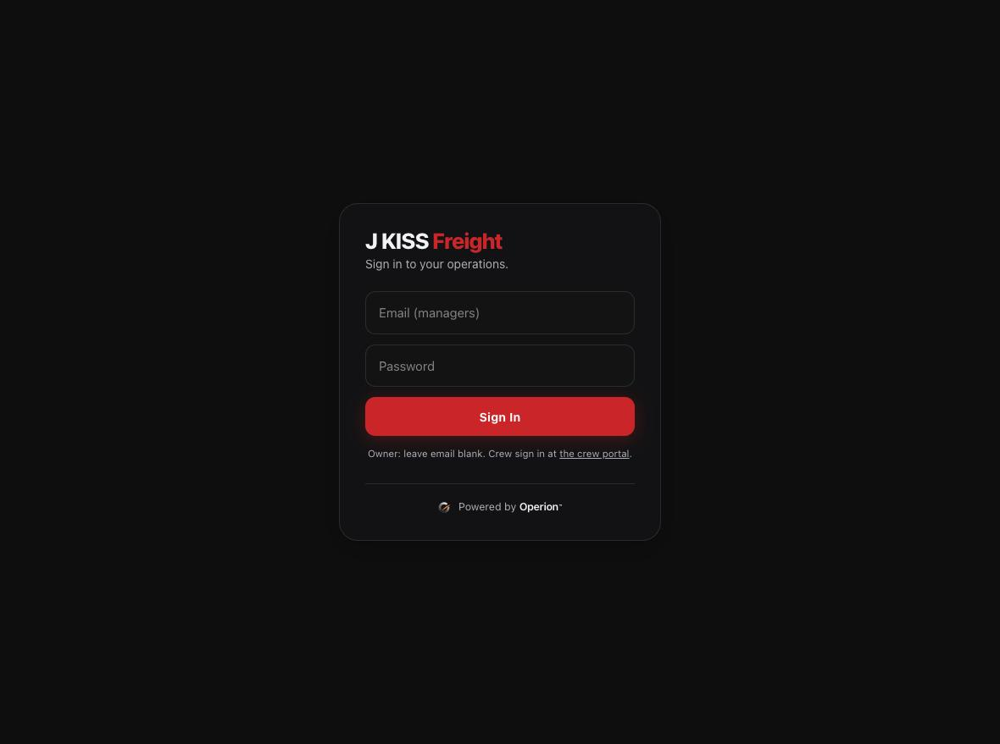
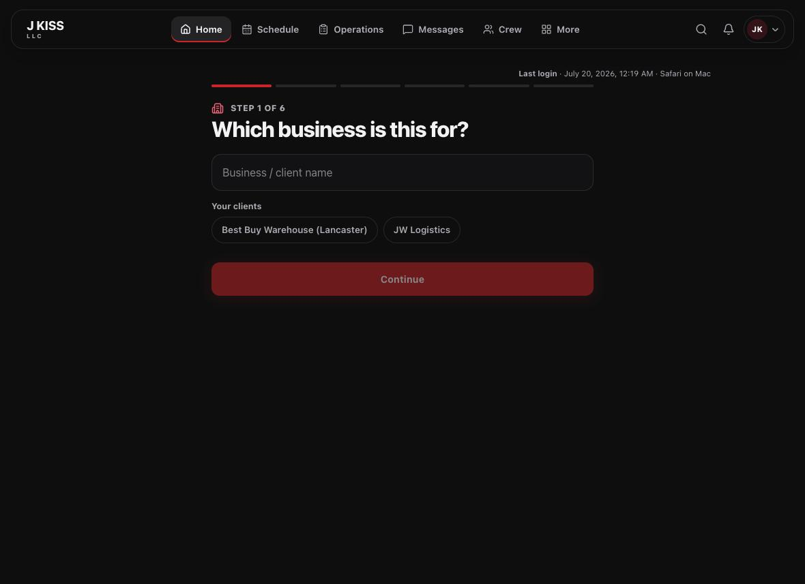

Everything you need to run your first day in Operion — from signing in to closing out the day with confidence.
15-minute readFor new administratorsStep-by-step
J KISS LLC · jkissllc.com
Edition 2026.07
Welcome
You’ll be running the day in 15 minutes.
Operion brings your entire operation into one calm, fast workspace. This guide walks you through the six things every administrator does — nothing more, nothing you don’t need. Follow it once and the rest of the platform will feel obvious.
Two ideas that make everything click
A
A booking
A customer’s job — the request, the quote, the money.
B
A route
The crew assignment that actually gets that job done.
Keep those two in mind and Operion falls into place: customers create bookings; you dispatch routes; the schedule shows both.
What you’ll master
1
Sign in
Get into your operations workspace.
2
Find your way around
Navigation, search, and the one shortcut that matters.
3
Read the morning dashboard
Know what needs you before you touch anything.
4
Dispatch a crew
Create a route, assign, and confirm.
5
Review AI quotes
Clear the Book Now queue like a pro.
6
Finish the day
A 60-second close-out checklist.
1
Getting in
Sign in
Operion opens to a single, focused sign-in screen. Owners and team members use the same door.
Goal
Reach your workspace
Time
30 seconds
You’ll need
Your password
Open your Operion web address in any modern browser.
Owner? Leave the email field blank and enter the owner password.
Team member? Enter your email and your password.
Select Sign In. Crew land in the Crew Portal; you land in Operations.
jkissllc.com/admin

The sign-in screen. Owners leave the email blank; everyone else signs in with their email.
🔒Signed out automatically. For safety, Operion signs you out after 10 minutes of inactivity. Just sign back in — you’ll return right where you were. Forgot your password? An administrator can set a new one for you.
2
Orientation
Find your way around
The dark bar across the top is your map. Your everyday sections live front and center; everything else is one click away under More.
Operations · More menu
123
1
More menu — everything grouped: Communication, Business, Finance, Release, Platform.
2
Grouped destinations — Businesses, Equipment, Claims, Pay, Settings, and more.
3
Home brand — click any time to return to your dashboard.
⌘The one shortcut to learn. Press ⌘ K (or Ctrl K) anywhere to open the command palette and jump straight to any page. It’s the fastest way to move through Operion.
✦
The “+” button
Always starts a New assignment, from anywhere.
◑
The Book Now bell
Shows how many online requests are waiting for you.
3
Situational awareness
Read your morning dashboard
Home tells you what needs attention before you touch anything. Start here every day.
Home
123
1
Attention counts — needs confirmation, needs reassignment, and tomorrow. Each clicks through to the exact list.
2
Book Now requests — every online submission by stage, at a glance.
3
Today’s operations — expandable cards with crew, time, and address.
🌙Evening head-start. After 5 pm, the dashboard automatically switches its focus to tomorrow so you can prep the next day before you leave.
4
The core loop
Dispatch a crew
Jobs get done by putting crew on a route. Create it, assign your people, and let them confirm.
Goal
Get a crew on a job
Time
2–3 minutes
You’ll need
Business, date, crew
Press “+” → New assignment and choose the business.
Set the price and equipment, then the address and date/time (one-off or recurring).
Add crew and their pay, then create the route.
Open the route, assign and send the assignment text.
As crew confirm, the status updates itself. On the day, Mark complete.
New assignment · Step 1 of 6

The guided six-step builder starts by choosing the business — your recent clients appear as one-tap chips.
◎Expected result. The route appears in Operations with a live status — Assigned → Awaiting confirm → Confirmed — so you always know where every crew stands.
Where your routes live
The Operations board
Every route, grouped by business or shown as a flat list — with the ones that need you surfaced first.
Operations
12
1
Business cards — upcoming, pending, and completed counts, plus the crew and value.
2
Attention badge — flags routes that are declined, unanswered, or short-staffed.
⚠︎Do this first each morning. Switch on the Attention filter. It gathers every route that’s declined, unanswered, or missing crew — clear those before anything else and your day stays calm.
5
Intake
Review AI quotes
When customers request a quote online, Operion’s AI reads their photos and suggests a price. Your job is to work the Book Now queue and approve or price the borderline ones.
Search & filter — find any request by name, phone, email, or address.
✳︎How the AI decides. Clear, single-load jobs get an instant quote. Anything uncertain — possible hazards, very large loads, or unclear photos — is sent to Manual Review for you. The AI only observes; your pricing always sets the final number.
✓Your rhythm. Clear Manual Review first, then send the Quote Ready ones. Moving and delivery jobs are always priced by hand — never by AI.
6
Keep the day on track
The schedule & finishing up
The schedule shows everything — online bookings and crew routes — on one board, and quietly flags conflicts before they become problems.
Schedule
12
1
Conflicts — the same crew, truck, or time booked twice, surfaced for you to resolve.
2
Day counts — confirmed, pending, unscheduled, and attention at a glance.
👆Read-only by design. The schedule is for seeing your day. To change a job, click its card to open the booking or route and edit it there.
Your 60-second close-out
Book Now queue is clear — no Manual Review left hanging.
Every route for tomorrow is Confirmed (check the Attention filter).
 1
2
3
1
2
3